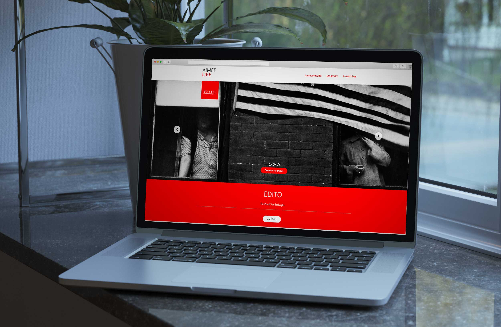
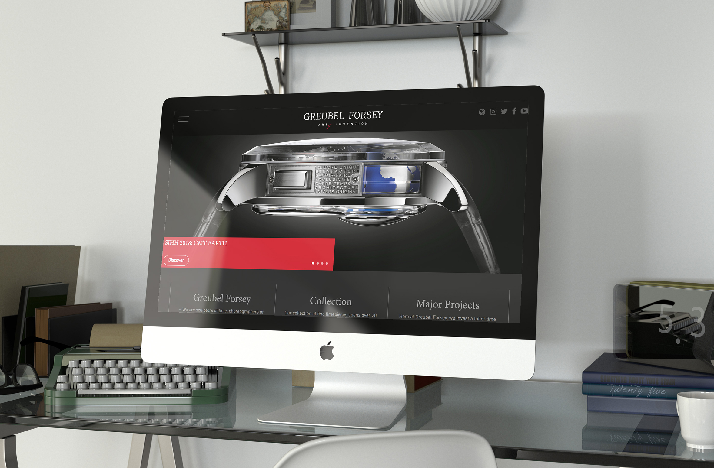
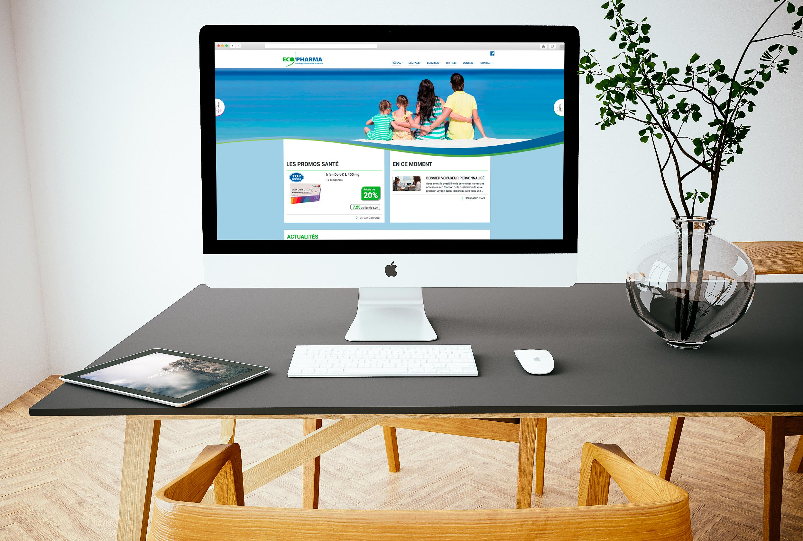
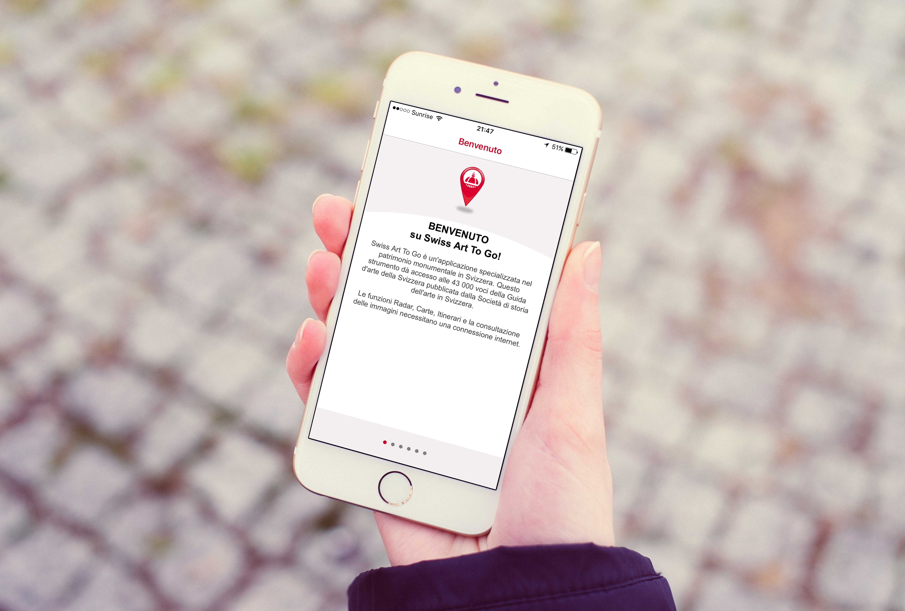
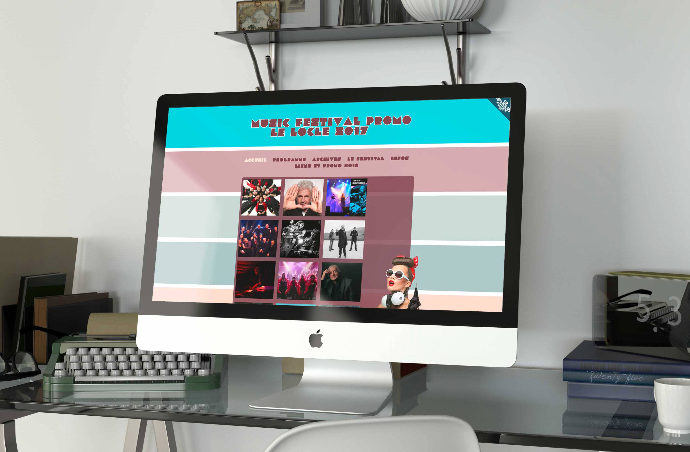

Portfolio

Aimerlire
Gestion, coordination et réalisation des cinqs premièrs numéros

Greubel Forsey
Gestion et coordination du projet

Ecopharma
Gestion, coordination du projet et traitement des données

Dixipolytool
Gestion et coordiantion du projet

Swiss Art To Go
Gestion et coordination du projet

Music Festival Promo
Gestion, coordination et réalisation du projet pour le festival du 2017